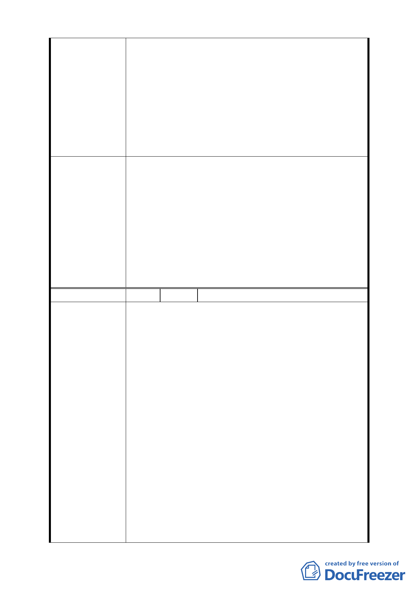

用，地上 4 層樓以上開放作為住宅使用，住宅使用比例
≦2/3 總容積，高度限制以不阻擋河岸景觀，及免辦環
境影響評估審查之 70 公尺為原則。為避免不切現況發
展，建議取消「街廓 A1、A2、B1、B2 街廓內臨接退縮
5 公尺人行道，其兩側每單一土地細分規模之建築基地
及 C2 街廓內需留設至少一處南北向生態及及山稜視景
廊道，其兩側建築物高度比依前開規定辦理，自指定退
縮地界線起 35 公尺範圍內之建築物高度比不得超過
1.5」之規定。
大彎北段地區係屬「2010 年臺北好好看」之科技產業軸
帶，基於其規劃理念係為提供產業進駐誘因、帶動城市
發展活力，故區內「2010 年臺北好好看」申請案之「土
地使用」部分，其因申請「2010 年臺北好好看」所獲容
委員會決議
積獎勵部分得比照商三所允許之使用項目，惟不得作住
宅之使用；至於其餘部分仍應依本區 92 年公告實施之
都市計畫規定辦理，不得作住宅之使用。有關臺北好好
看申請案之建築物高度管制部分，經委員會決議採不記
名投票方式表決結果為「建築高度 70 公尺（上限）、視
覺廊道 40 公尺（下限）」。
編 號 2 陳情人 奇泰建設有限公司等
一、目前大彎北段商業區之建物使用現況，大多違規
作為住宅使用，為避免都市計畫變更公告實施
後，造成未來有更大量之違規使用情事發生，故
建議地上1至3層維持商業使用 , 地上4層以上開
放作為住宅使用，住宅使用比例≦ 2/3 總容積，
高度限制以不阻擋河岸景觀，及免辦環境影響評
估審查之 70 公尺為原則。查內湖科技園區原定
位為工業區，歷經前、後任市長計11次之使用用
途放寬，加上內科園區之土地取得成本較低，而
陳情理由
大彎北段當初重劃配地時，商業區土地成本為住
宅區之2倍，故在內科園區開放商業使用之影響
下，內科園區之商業使用早已取代大彎北段原設
定之商業使用，以致於目前大彎北段已興建完成
之商業區，多數均存在著住宅功能的使用，違反
現行之使用規定，故本區若再以限制 2/3 商業使
用比例要求，將與市場使用現況嚴重乖離，並損
及原重劃配地時對於原所有權人之權益。
二、另大彎北段之商業區、娛購區已有部份土地依現
行之法令完成開發建築，為避免不切現況發展，
- 42 -